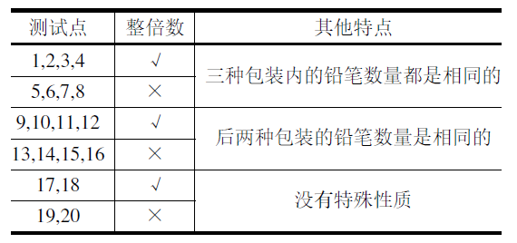

NOIP2016年普及组第一题。
P老师需要去商店买n支铅笔作为小朋友们参加NOIP的礼物。 她发现商店一共有3种包装的铅笔，不同包装内的铅笔数量有可能不同，价格也有可能不同。 为了公平起见，P老师决定只买同一种包装的铅笔。
商店不允许将铅笔的包装拆开，因此P老师可能需要购买超过n支铅笔才够给小朋友们发礼物。
现在P老师想知道，在商店每种包装的数量都足够的情况下，要买够至少n支铅笔最少需要花费多少钱。
| 输入 | 输出 |
|---|---|
|
57 2 2 50 30 30 27 | 54 |
铅笔的三种包装分别是：
P老师需要购买至少57支铅笔。
如果她选择购买第一种包装，那么她需要购买29份，共计2×29=58支，需要花费的钱为2×29=58。
实际上，P老师会选择购买第三种包装，这样需要买2份。 虽然最后买到的铅笔数量更多了，为30×2=60支，但花费却减少为27×2=54，比第一种少。
对于第二种包装，虽然每支铅笔的价格是最低的，但要够发必须买2份，实际的花费达到了30×2=60，因此P老师也不会选择。
所以最后输出的答案是54。
| 输入 | 输出 |
|---|---|
|
9998 128 233 128 2333 128 666 | 18407 |
| 输入 | 输出 |
|---|---|
|
9999 101 1111 1 9999 1111 9999 | 89991 |
子任务会给出部分测试数据的特点。 如果你在解决题目中遇到了困难，可以尝试只解决一部分测试数据。
每个测试点的数据规模及特点如下表：

上表中“整倍数”的意义为：若为√，表示对应数据所需要的铅笔数量n—定是每种包装铅笔数量的整倍数（这意味着一定可以不用多买铅笔)。
#include <iostream>
using namespace std;
int main(){
int n,m,mincost,pk,pr;
cin >> n;
mincost = n * 10000;
for(int i=0;i<3;i++){
cin >> pk >> pr;
if(n%pk==0){
m = n/pk * pr;
}else{
m = (n/pk + 1) * pr;
}
if(m < mincost){
mincost = m;
}
}
cout << mincost << endl;
return 0;
}